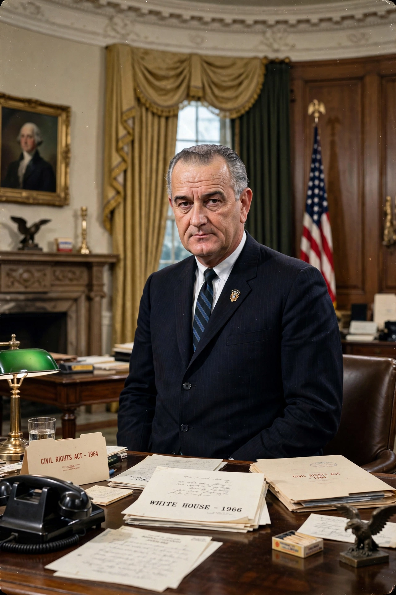

Lyndon Baines Johnson (27 August 1908 – 22 January 1973), often called LBJ, was the 36th president of the United States (1963–1969).

Lyndon B. JohnsonA Texan, Johnson served in the US House and Senate, becoming Senate Majority Leader, renowned for legislative mastery. He was John F. Kennedy's running mate in 1960 and vice president from 1961.
Johnson succeeded Kennedy after his assassination in Dallas on 22 November 1963. He won a landslide in 1964 and enacted the Great Society: the Civil Rights Act 1964, Voting Rights Act 1965, Medicare and Medicaid, and War on Poverty programmes.
His escalation of the Vietnam War — Gulf of Tonkin Resolution, large ground deployments — provoked mass protest and divided the country. In March 1968 he announced he would not seek re-election. See Great Society, Vietnam War, John F. Kennedy.